マニュアルの表現に関して
本マニュアルでは#(シャープ)と大文字の英語を組み合わせた記号表現があります。この意味以下のようになりますので、ご理解の上お読みいただけますようお願い申し上げます。
| 記号 | 読み方 | 説明 |
|---|---|---|
| L(エル) | レイアウト | 表示されている画面の名称 |
| B(ビー) | ボタン | 画面上のボタン |
| F(エフ) | フィールド | 画面上の入力スペースのこと |
| T(タブ) | タブ | 画面上のタブスペースのタイトル |
| S(エス) | スクリプト | スクリプトメニューにあるスクリプト名 |
例１）L[メインメニュー]→B[外来受付]
メインメニュー画面の、外来受付ボタン（を押す）となります。
例２）L[診療記録]→T[病名]→F[病名]
診療記録画面の、病名タブの、病名入力スペースとなります。
診察画面
診察画面では、受診毎の診察内容や診療行為（会計オーダー）を記録します。
保険病名の入力補填機能がありますので診療行為入力後B[確]で確認または処理が行えます。
必要に応じてB[処](処方せん)、B[２]（カルテ２号用紙）、B[診]（診療情報提供書）などが出力できます。
診療記録が終了したら、まずB[確]で入力した診療項目の適応病名の確認と編集が行えます。
全て完了したらB「終」ボタンでレセコンに入力が完了したデータを送信できます。
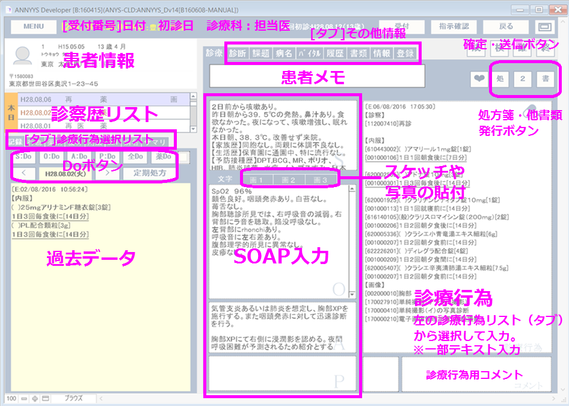
診療記録画面へは、L[外来受付]リストの右側にあるB[診察]か、L[受付一覧]リストの右にあるB[診]で移行できます。
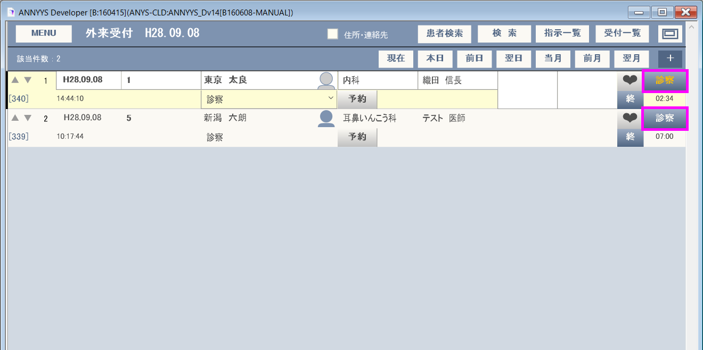
[重要]1回の診療記録が終わったら次の２ステップを行うよう心がけてください。
初期画面
診察画面を最初に開いたときの最初の状態です。
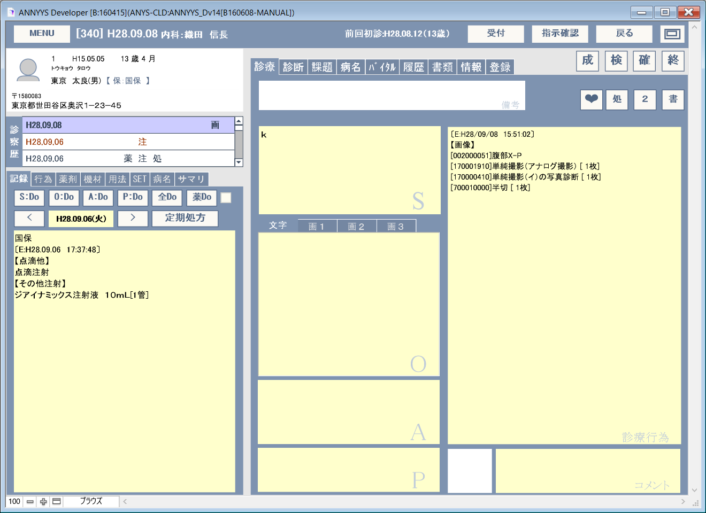
画面左下のT[記録]には前回までに行った診療内容が表示されます。
※B[<]やB[>]で過去履歴内容の表示を変更できます。
※この表示がB[全Do]、B[薬Do]の対象データとなります。(詳細は[診療記録]/Do参照)
履歴の参照
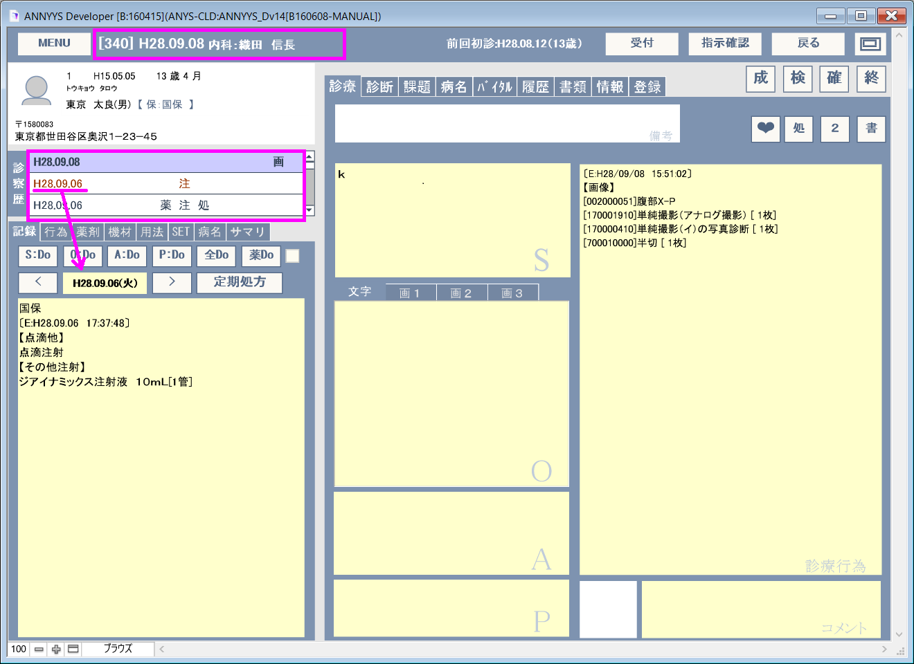
診察歴リスト部分をクリックすると該当日付の診療記録が表示されます。
指示（オーダー）
離れた場所にいる看護師さんなどに指示を出したい場合があります。そんな時はB[指示確認]を選択して指示内容をコメントすることができます。例えば注射を指示する場合の例で説明します。
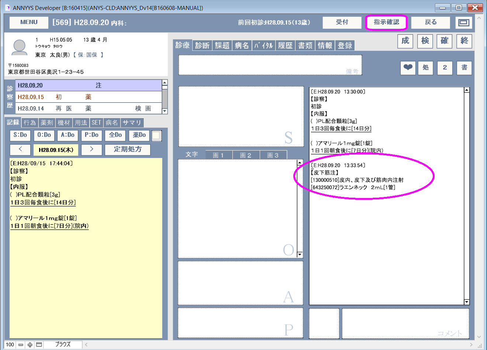
注射内容を登録したらB[指示確認]ボタンを押します。
指示画面が表示されたら、目的の項目を選び指示内容を記録します。
画面にあるように指示内容はポップアップで表示させることも可能です。ポップアップ項目の内容はいつでも編集可能です。
このように指示を登録することが可能で、例えば看護師さん側では指示内容を確認したかどうかのチェックや署名（iOS）が可能です。
指示画面は、医学管理料、処方、処置、検査、手術、画像の分類があります。
T[所見]
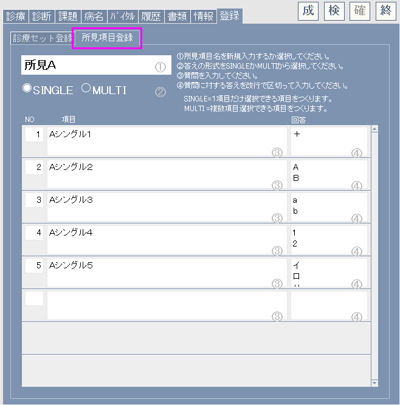
あらかじめ設定しておいた内容からポップアップ形式または選択形式で内容を登録できるようになります。
所見内容がある場合はタブタイトルT[所見]にマウスをかざせばポップアップヘルプ形式で内容を確認する事ができます。
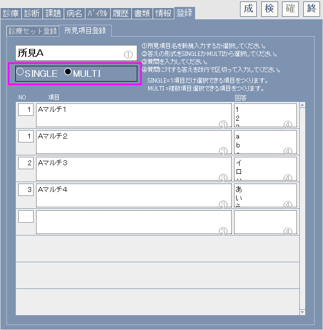
所見項目はいくつでも作成する事ができるので必要に応じて個別に作成できます。
登録はT[登録] T[所見項目登録]から行えます。詳細は[所見項目の登録]をご覧ください。
T[診断名]
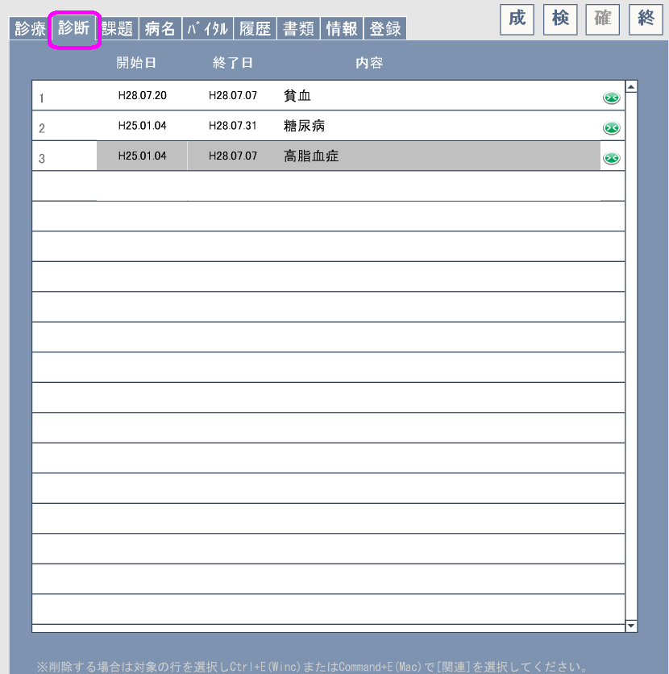
診断名は医師が実際の治療方針を決定するための診断名を記録してください。
診断名は日付情報と一緒に記録できます。また、診断名のなの[主]となるものをマークする事もできます。古くなった過去の診断名(=現在の治療とは関係ないもの)はリスト右にある緑色のボタンB(><)で無効にする（グレー反転する）ことができます。無効となった診断名は列下に表示されるようになり、過去歴として参照できます。
診断名はタブタイトルT[診断名]にマウスをかざせばポップアップヘルプ形式で内容を確認する事ができます。
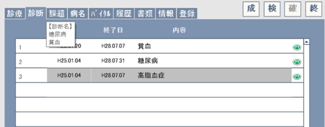
T[課題]（プロブレムリスト）
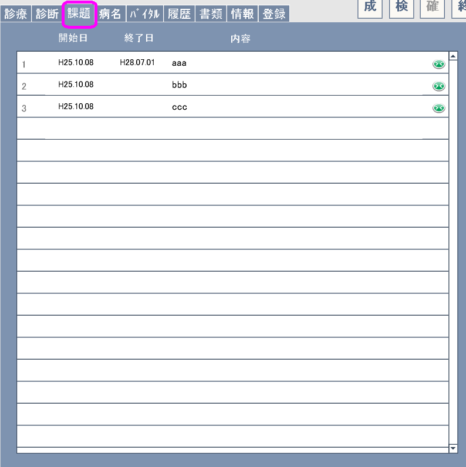
T[課題]とはプログレムリストのことです。
プロブレムリストには日付情報と一緒に記録できます。また、古くなったり必要なくなったリストはリスト右にある緑色のボタンB(><)で無効にする（グレー反転する）ことができます。無効となったプロブレムリストは列下に表示されるようになり、過去歴として参照できます。
プロブレムリストはタブタイトルT[課題]にマウスをかざせばポップアップヘルプ形式で内容を確認する事ができます。
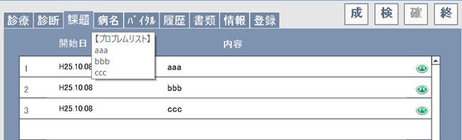
T[病名]
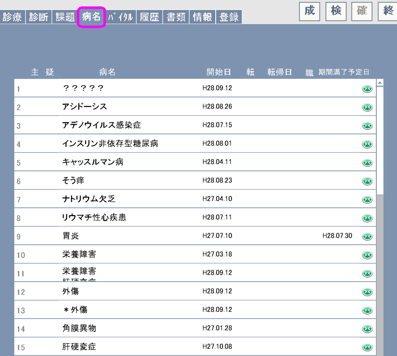
ここで登録する病名は診療行為や薬剤等に対する適応病名（保険病名ともいう）を登録します。
各病名には開始日や転帰、転帰日が記録できるようになっています。また[主]病名や[疑]い病名となるものをクリックする事でマークする事ができます。
ORCAと連動している場合は個々に登録された病名が会計情報とともに送信されるようになります。
古くなったり必要なくなったリストはリスト右にある緑色のボタンB(><)で無効にする（グレー反転する）ことができます。
病名はタブタイトルT[病名]にマウスをかざせばポップアップヘルプ形式で内容を確認する事ができます。
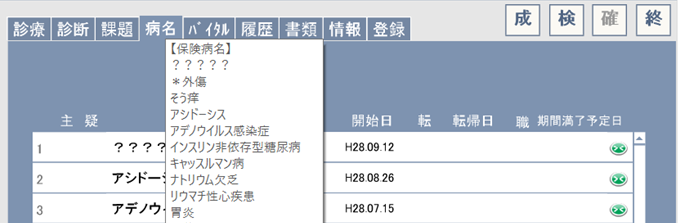
T[バイタル]
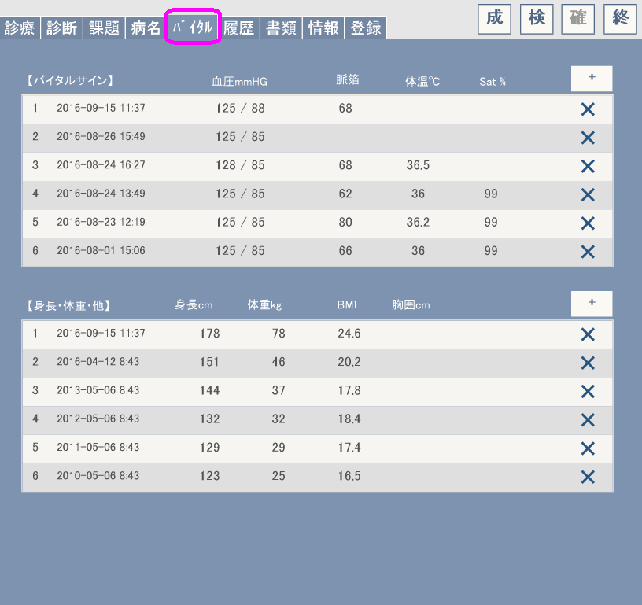
バイタルデータとして来院日の状態を記録する事ができます。
バイタルデータはタブタイトルT[バイタル]にマウスをかざせばポップアップヘルプ形式で最後に調査した日付の内容を確認する事ができます。

T[履歴]
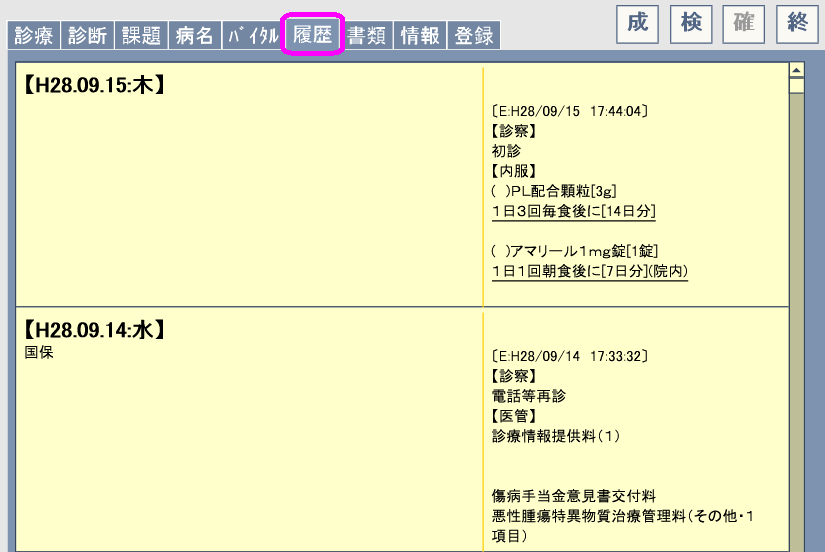
履歴は該当患者の過去に記録した診療記録一覧リストです。
スクロールしながら過去の情報を見渡す事ができます。
T[書類]
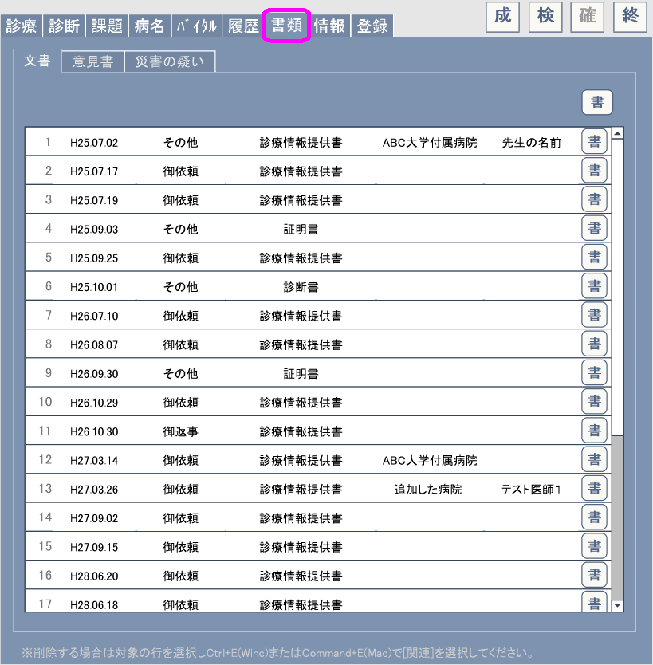
各種書類を作成できます。
書類の種類は以下の組合せが用意されていますが必要に応じてこれら表題を編集する事もできます。
| 御依頼 御返事 御連絡 その他 |
X | 診療情報提供書 一般文書 連絡事項 診断書 証明書 |
L[診断書],L[証明書]
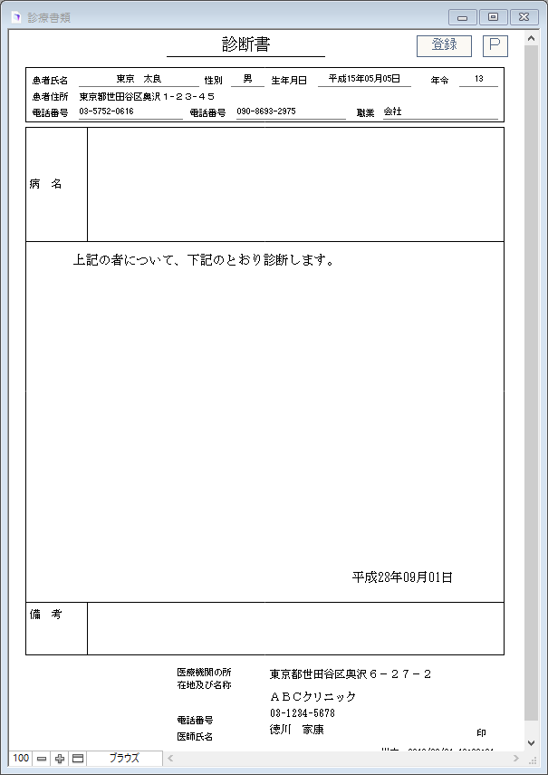
診断書・証明書は表題のポップアップを変更すれば自動的にレイアウトが変わります。
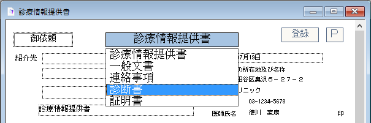
また、本体部部にはあらかじめ定型文章を作成しておき、ポップアップから選択して入力する事も可能です。
T[情報]
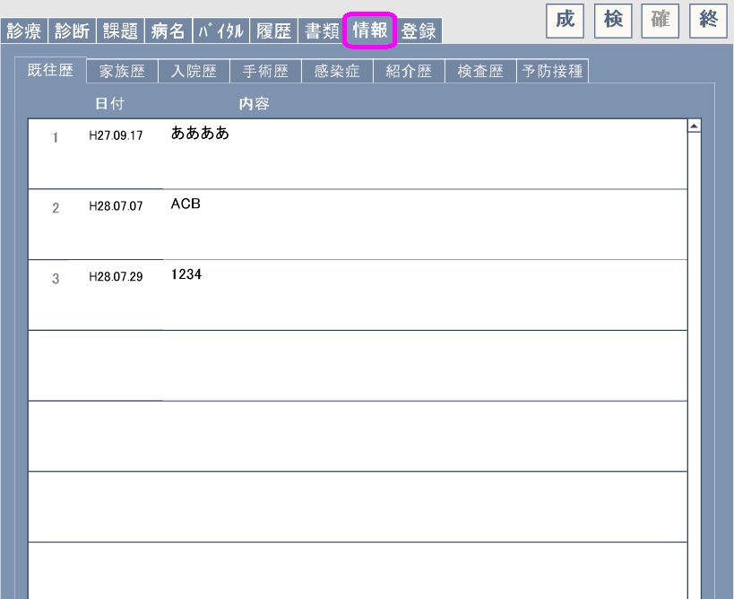
T[情報]にはいくつかの項目があり、それぞれの情報を収録できるようになっています。現在ある項目は以下の通りで、タブで切替えて利用してください。
T[既往歴]
T[家族歴]
T[入院歴]
T[手術歴]
T[感染症]
T[紹介歴]
T[検査歴]
T[予防接種]
T[登録] T[所見項目登録]
T[所見]で利用する所見項目と内容を登録・編集できます。
所見1項目につき「単独解答項目」グループと｢複数解答項目」グループが１つずつ登録できます。
SINGLE項目はT[所見]で答えに対する解答がポップアップ形式により１つしか選択できません。
MULTI項目はT[所見]で答えに対する解答がチェックボックス形式により複数選択できます。
いづれも項目も、解答内容は改行で区別されるようになっています。
T[登録] T[診療セット登録]
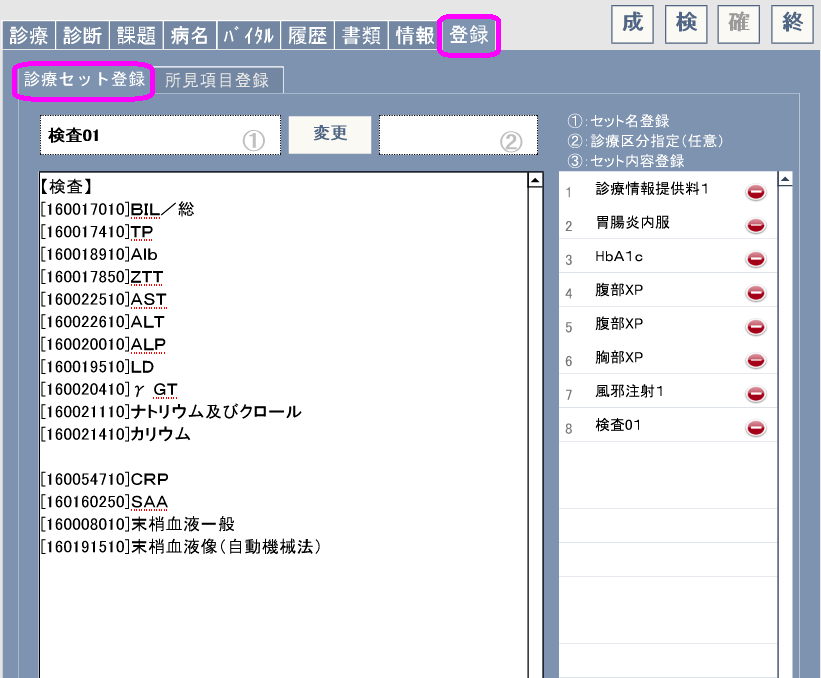
※例えば「診療情報提供料」などは、紹介先の病院名の記述が必要なります。通常の入力方法だと
と選択入力し、コメント欄に病院名を書き込む必要がありますが、セット登録しておくとT[SET]内の項目から選択するだけであとは病院名を記入するだけで済むようになります。
T[診療セット登録]では、ある程度定型化できる診療行為などをここでセット登録しておく事で、後の診療行為の入力の手間を軽減する事ができます。
特に複数項目の入力が必要な診療行為はセット登録すると何回もクリックしたりする必要がなくなります。
診療行為に入力（した）された内容を#T[診察セット登録]の③部分にコピー&ペーストすることでセット登録が行えます。
ここで編集・登録したセット内容は診療画面右のT[SET]で選択できるようになります。
サンプル１
【医管】
[180016110]診療情報提供料（１）
[810000001]
サンプル２
【在宅】
[114009210]在宅自己注射指導管理料（１以外の場合）
[620006199]イミグランキット皮下注３ｍｇ ０．５ｍＬ[2筒]
サンプル３：複数区分
【診察】
[111000110]初診
【検査】
[160183210]神経学的検査
【画像】
[170020110]ＭＲＩ撮影（１．５テスラ以上の機器）
[002100001]頭部MRI